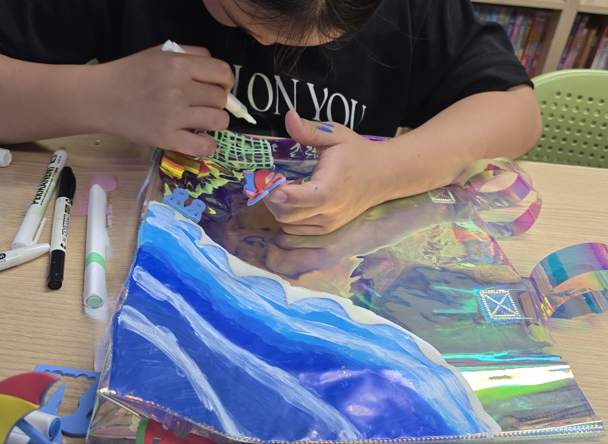
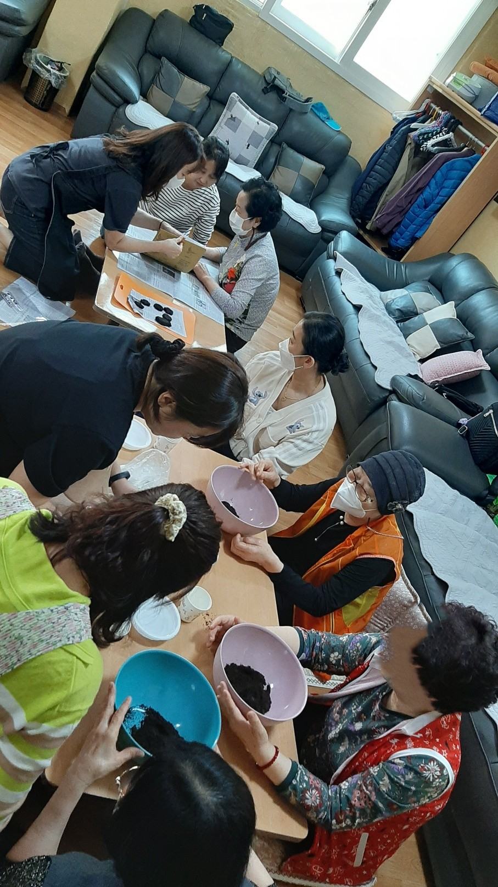
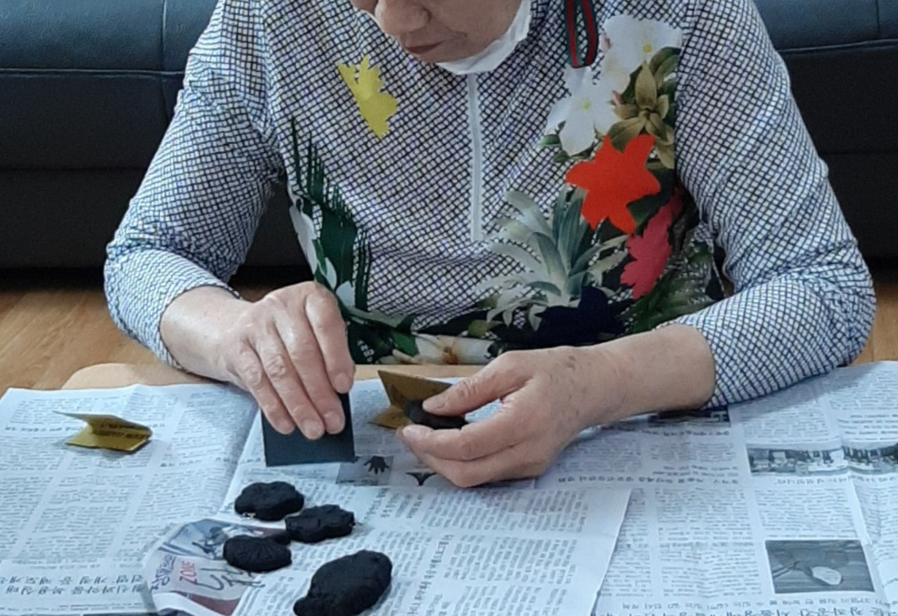

SELECTED WORKS & PRACTICE
Works
만들고, 그리고, 사람들과 함께해 온 실제 작업과 활동을 소개합니다.
01 · PAINTING & PERSONAL WORKS
Fine Art
여행과 자연, 일상에서 오래 마음에 남은 장면을 회화와 순수미술 작업으로 기록합니다.
봄 - Yellow
여름 - 새벽의 수국
가을 - Nostalgia
겨울 - 창가
수련
눈물나는 날
후(숨)
푸른화병과 고양이
03 · ART & EDUCATION
Art & Education
미술교육, 수업과 프로그램 기획, 강연과 사람들과 함께한 예술 활동을 실제 장면과 결과 중심으로 소개합니다.



